3.4.2. Таблица распределения разностей, построение дифференциальной модели
3.4.2. Таблица распределения разностей, построение дифференциальной модели
Дифференциальный криптоанализ основан на свойствах, используемых в алгоритме шифрования нелинейных операций(подстановок). Исходными данными для дифференциального криптоанализа являются пары открытых текстов и соответствующие им пары шифртекстов. Дифференциальные свойства подстановок отражаются в таблице распределения разностей. Она строится таким образом, что в ней содержатся статистические свойства всех возможных входных разностей и соответствующих им выходных разностей. Пусть на вход некоторой подстановки подаются пары значений 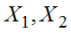, имеющие размерность равную размерности подстановки и фиксированное значение разности 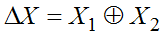. Рассмотрим все возможные значения разности между двумя входными значениями. Очевидно, что всего таких разностей будет  , где n – размерность входа подстановки. Эти значения будут соответствовать строкам таблицы распределения разностей, причем значение разности в шестнадцатеричном виде является первым элементом строки. Столбцы будут соответствовать выходным разностям, т. е. полученным после преобразования с помощью подстановки значений, составляющих входные разности. В результате такого преобразования из пар значений с заданной разностью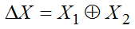с помощью подстановки преобразуются в 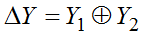, где разность 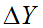 соответствует столбцам таблицы. Значением ячеек таблицы является количество появления определенной выходной разности для заданной входной. Так, например, для всех возможных входных разностей равных 0x0a после преобразования с помощью подстановки преобразуются в разности, в которых 10 раз встречается разность 0x08. То есть вероятность того, что при входной разности 0x0a встретится выходная разность 0x08 равна 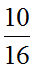. Рассмотрим, как выполняется построение таблицы распределения разностей. Сначала первый столбец и первая строка заполняются нулевыми значениями. Это означает, что если сумма входных значений равна 0, т. е. они одинаковые, то и сумма выходных значений тоже будет равна 0, так как одинаковые входные значения преобразуются в одинаковые выходные значения.
, где n – размерность входа подстановки. Эти значения будут соответствовать строкам таблицы распределения разностей, причем значение разности в шестнадцатеричном виде является первым элементом строки. Столбцы будут соответствовать выходным разностям, т. е. полученным после преобразования с помощью подстановки значений, составляющих входные разности. В результате такого преобразования из пар значений с заданной разностью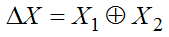с помощью подстановки преобразуются в 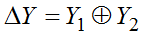, где разность 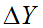 соответствует столбцам таблицы. Значением ячеек таблицы является количество появления определенной выходной разности для заданной входной. Так, например, для всех возможных входных разностей равных 0x0a после преобразования с помощью подстановки преобразуются в разности, в которых 10 раз встречается разность 0x08. То есть вероятность того, что при входной разности 0x0a встретится выходная разность 0x08 равна 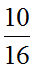. Рассмотрим, как выполняется построение таблицы распределения разностей. Сначала первый столбец и первая строка заполняются нулевыми значениями. Это означает, что если сумма входных значений равна 0, т. е. они одинаковые, то и сумма выходных значений тоже будет равна 0, так как одинаковые входные значения преобразуются в одинаковые выходные значения.
Таблица распределения разностей, приведенная на рис. 3.33, соответствует подстановке из табл. 3.7.
Таблица 3.7
Пример подстановки размером 4 бита
0 |
1 |
2 |
3 |
4 |
5 |
6 |
7 |
8 |
9 |
A |
B |
C |
D |
E |
F |
0 |
6 |
7 |
9 |
B |
5 |
E |
4 |
A |
1 |
8 |
2 |
F |
C |
3 |
D |
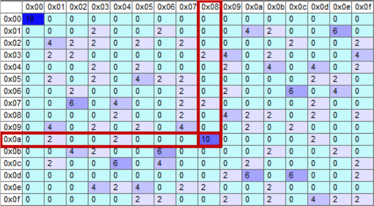
Рис. 3.33. Пример таблицы распределения разностей
Далее приведен алгоритм генерации одной строки таблицы распределения разностей для подстановки, приведенной в таблице 3.8 для построения строки таблицы с входной разностью 01h. Для этого сгенерируем все возможные пары значений из трех бит так, чтобы сумма по модулю 2 (она же разность) каждой пары была равна 01h. Сначала берем все возможные значения от 0 до  , это будут первые значения в парах. Вторые значения получаем, прибавляя к первым наше искомое значение разности 01h. Таким образом, получим 8 различных пар значений, причем сумма любой пары дает 01h. После этого, все значения пар пропускаем через подстановку, приведенную в таблице 3.8, и вычисляем, сколько раз при этом встретилось разных значений суммы по модулю 2 при суммировании каждой пары. Количество каждых уникальных значений суммы записываем в ячейку таблицы, где строка − это 01, а столбец − это значение суммы. Схема этого алгоритма приведена на рис. 3.34.
, это будут первые значения в парах. Вторые значения получаем, прибавляя к первым наше искомое значение разности 01h. Таким образом, получим 8 различных пар значений, причем сумма любой пары дает 01h. После этого, все значения пар пропускаем через подстановку, приведенную в таблице 3.8, и вычисляем, сколько раз при этом встретилось разных значений суммы по модулю 2 при суммировании каждой пары. Количество каждых уникальных значений суммы записываем в ячейку таблицы, где строка − это 01, а столбец − это значение суммы. Схема этого алгоритма приведена на рис. 3.34.
Таблица 3.8
Пример подстановки размерности 3 бита
0 |
1 |
2 |
3 |
4 |
5 |
6 |
7 |
1 |
0 |
6 |
4 |
5 |
3 |
7 |
2 |
В результате выполнения вычисления мы видим, что значение 001 встречается 2 раза, это значение стоит в ячейке с координатами 01h*01h, так же вычисляются значения для столбца 2(010), 5(101) и 6(110), что можно увидеть в строке с номером 01. Этот результат означает, что для входной разности 01 вероятность выходной разности 01 равны 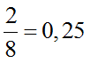, такие же вероятности имеют значения 2, 5,6. Вероятность появления остальных значений разности равна нулю. Очевидно, что дифференциальный криптоанализ работает потому, что все операции, кроме подстановки, изменяя значение данных в процессе шифрования, не изменяют значения их разности (суммы по модулю два).
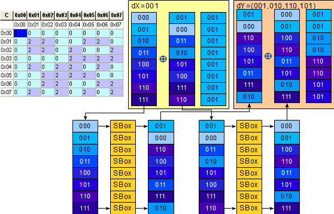 |
Рис. 3.34. Схематичное изображение процесса заполнения ячеек таблицы распределения разностей |
Каждой ячейке таблицы распределения разностей соответствует пара значений, состоящая из входной и выходной разности, которая называется дифференциалом и обозначается как 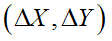. Значение в ячейке, деленное на 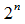, является вероятностью появления определенного дифференциала. В идеале, вероятность появления каждой выходной разности, при любой входной, должна быть равна 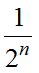, в реальности идеальных подстановок не бывает, и вероятности разных дифференциалов отличаются друг от друга. Дифференциальный анализ использует отклонение вероятности дифференциалов от теоретического значения для некоторых входных разностей для построения дифференциальной модели всего шифра.
Для построения дифференциальной модели всего шифра необходимо выбрать наиболее подходящие дифференциалы из таблицы распределения разностей с помощью двух критериев:
− необходимо выбирать дифференциалы с максимальной вероятностью;
− необходимо выбирать дифференциалы с минимального весом Хэмминга выходной разности.
Вес Хэмминга для некоторого значения или вектора — это количество бит, которые равны 1.
После анализа подстановок в шифре в первом раунде можно начинать построение дифференциальной модели всего блочного шифра. Для того, чтобы это сделать, необходимо для подстановки первого раунда выбрать дифференциал в соответствии с двумя приведенными критериями, а для всех последующих раундов необходимо выбирать дифференциалы так, чтобы выход предыдущего раунда (ненулевые биты) стал входом следующего раунда и так далее до предпоследнего раунда. В дифференциальной модели алгоритма шифрования недопустимы «висячие ветки» и дифференциалы с нулевой вероятностью. Эта модель имеет свое входное значение разности открытых текстов и выходное значение разности шифртекстов, желательно, чтобы количество подстановок, которые в ней участвуют, было минимальным.
Рассмотрим пример построения дифференциальной модели всего шифра. Для ее построения используем учебный шифр (рис. 3.35).
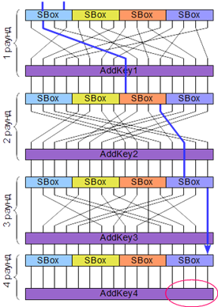 |
Рис. 3.35. Структура учебного блочного шифра |
Тестовый шифр состоит из 4 раундов, в нем используются одинаковые подстановки размером 4 бита в качестве нелинейного преобразования, перестановка в качестве линейного преобразования и добавления подключа с помощью операции сложения по модулю 2.
В качестве начального дифференциала выбираем (05, 04) с вероятностью 0,5 в 1-й подстановке первого раунда. Его выход после перестановки поступает на вход третьей подстановки второго раунда, 3-й бит (при отсчете с нуля). В качестве второго дифференциала выбираем (08,01) с вероятностью 0,5. Далее выход этого дифференциала после перестановки поступает на вход четвертой подстановки третьего раунда (2 бит).
Таблица распределения разностей для выбранной случайной подстановки представлена на рис. 3.36.
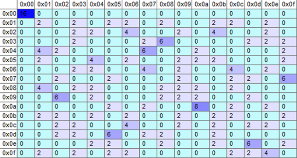 |
Рис. 3.36. Таблица распределения разностей |
Дифференциалом третьего раунда выбираем (04, 01) с вероятностью 0,5. Дифференциальная модель всего шифра записывается как 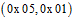.
Вероятность этой модели равна произведению вероятностей дифференциалов 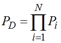, в нашем случае 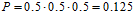. Это означает, что при заданной входной разности 05 на выходе шифра получится разность 01 с вероятностью 0.125. Чем выше вероятность, тем легче проводить криптоанализ.
Из этой формулы становится понятно, почему должно быть, как можно меньше дифференциалов в модели, а, следовательно, почему выходной вес Хэмминга для выходных разностей дифференциалов должен быть минимальным. Также, если вероятность дифференциала равна нулю, то все выражение равно нулю, т. е. криптоанализ невозможен.
С помощью этой модели, и определенного количества данных вида выбранный открытый текст/шифртекст, можно найти часть ключа, показанную на рисунке 3.35 красным овалом. Для нахождения остальных частей последнего ключа необходимо построить другие модели, влияющие на другие финальные подстановки. После нахождения всего последнего подключа выполняется частичное расшифрование используемых шифртекстов, а именно расшифрование последнего раунда. После этого, таким же образом выполняется поиск предыдущего ключа и так далее до получения всех подключей шифрования.